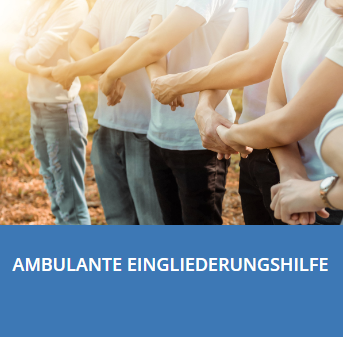
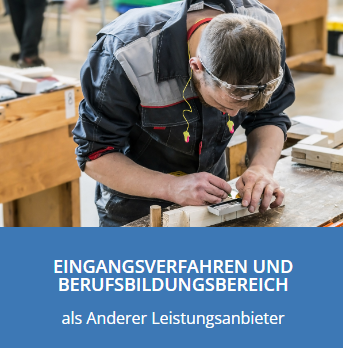
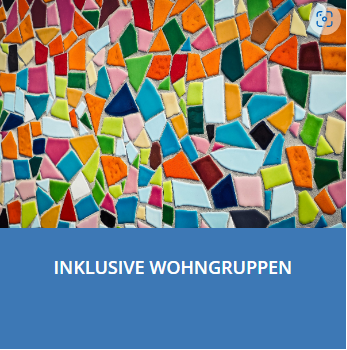
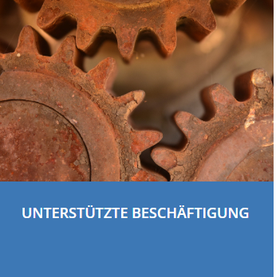

SOZIALÄMTER / ANDERE REHA-TRÄGER
Schön, dass Sie sich für unsere Leistungen interessieren. Wir sehen uns einem inklusiven Arbeitsmarkt und der gesellschaftlicher Teilhabe jedes Menschen verpflichtet. Qualität und Wirtschaftlichkeit sind für uns selbstverständliche Merkmale unseres Handelns und gleichzeitig fortwährende Anforderungen. Bei uns finden Sie Alternativen, für erfolgreiche Lebensläufe und berufliche Werdegänge. Pädagogische und rehabilitative Ansätze stärken den Menschen und überzeugen am Arbeitsmarkt.
Unsere Leistungen basieren auf folgenden rechtlichen Grundlagen
SGB IX, Rehabilitation und Teilhabe von Menschen mit Behinderungen
SGB XII, Sozialhilfe
SGB VIII, Kinder und Jugendhilfe
NSchG, Niedersächsisches Schulgesetz
